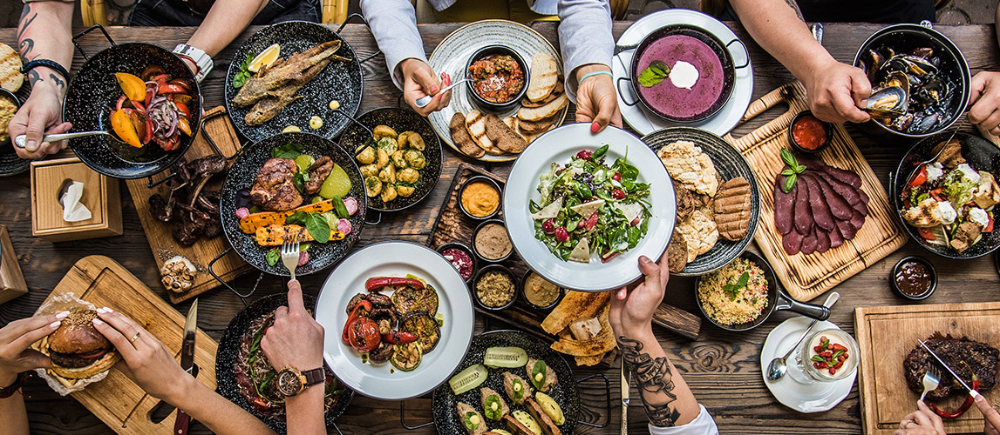
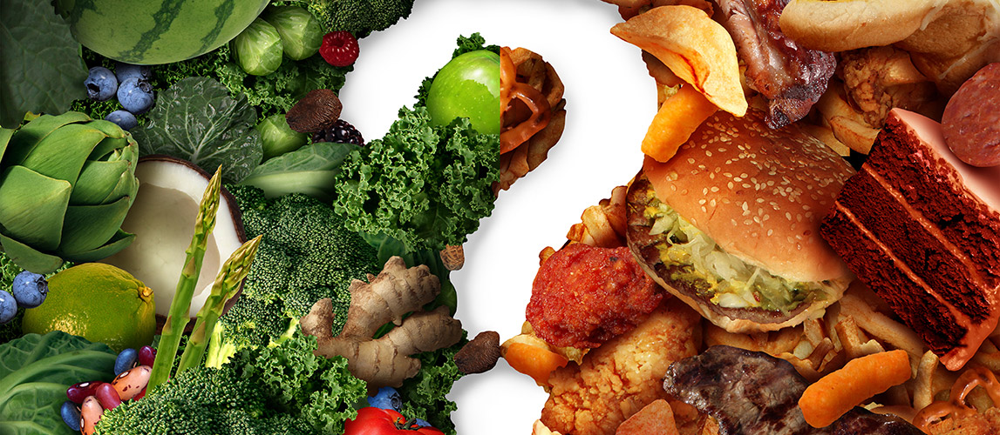

TƯ VẤN DINH DƯỠNG
Chăm sóc sức khỏe không chỉ là nhận tư vấn và điều trị y tế từ bác sĩ chuyên khoa khi có bệnh, không chỉ là hồi phục mà còn là duy trì thể trạng khỏe mạnh. Với tốc độ đô thị hóa nhanh chóng cùng lối sống hiện đại chúng ta khó lòng kiểm soát ăn uống từ đó dẫn đến những tác động tiêu cực cho sức khỏe.
Để có lối sống khỏe mạnh, cân bằng một trong những điều quan trọng là lựa chọn đúng thực phẩm và duy trì chế độ ăn uống hợp lý giúp cơ thể tránh khỏi các bệnh mãn tính như cao huyết áp, tiểu đường, béo phì, tim mạch, ung thư.
Kế hoạch dinh dưỡng cho người mắc Cholesterol cao
Duy trì chế độ ăn uống cân bằng, lành mạnh, ít chất béo bão hòa và chất béo chuyển hóa có thể giúp giảm mức cholesterol trong máu. Bữa ăn cần đảm bảo đủ 5 nhóm thực phẩm chính gồm trái cây; rau và các loại hạt; thịt nạc và thịt gia cầm; cá; trứng và đậu phụ; ngũ cốc nguyên cám và nhiều chất xơ; giảm sữa chứa nhiều chất béo; sữa chua; phô mai. Nên sử dụng bơ thực vật và dầu thực vật.
Tránh hoặc giảm các loại thực phẩm như bơ; mỡ động vật; dầu cọ hoặc dầu dừa; các loại bánh hoặc khoai tây chiên ngập dầu; thịt mỡ; thịt xay; xúc xích và thịt xông khói; nội tạng động vật như gan, thận; thực phẩm nguyên kem; các loại bánh ngọt; thức ăn nhanh như hamburger, khoai tây chiên, gà rán và taco.
Tại Công ty của chúng tôi, chúng tôi đưa lời khuyên về chế độ ăn uống dựa trên tình trạng sức khỏe, thể trạng, thói quen và sở thích ẩm thực. Đồng thời, chúng tôi cũng thực hiện các kiểm tra về mức cholesterol (nồng độ, tỉ lệ HDL, LDL), triglyceride trong máu.
Các đánh giá và tư vấn cho:
Nhu cầu ăn uống cho trẻ em và người lớn
Dinh dưỡng khi mang thai
Đánh giá mức độ phát triển và dinh dưỡng trẻ em
Quản lý tăng, giảm cân
Dị ứng hoặc không dung nạp thực phẩm
Các vấn đề của hệ tiêu hóa
Quản lý bệnh mãn tính thông qua dinh dưỡng (béo phì, tiểu đường, bệnh lý tim mạch, cholesterol cao, huyết áp cao, ung thư
Bác sĩ Khoàng Văn Hưng, chuyên khoa dinh dưỡng của CNTT 17-15 có chuyên môn cao về xây dựng chế độ ăn uống, tăng cường sức khỏe thông qua thay đổi chế độ dinh dưỡng. Năm 2018, bác sĩ nhận bằng dinh dưỡng tại Moscow. Bác sĩ cũng được đào tạo tại Trung tâm khoa học và phục hồi tại Nga (gồm điều trị dinh dưỡng cho bệnh nhân có vấn đề về hô hấp, đường tiêu hóa, tim mạch, béo phì và phục hồi bệnh nhân sau phẫu thuật)